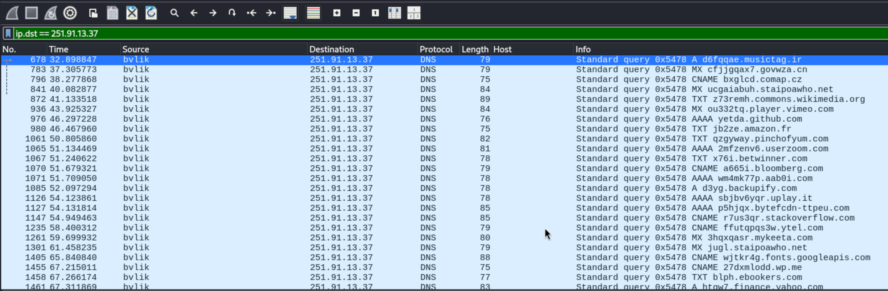
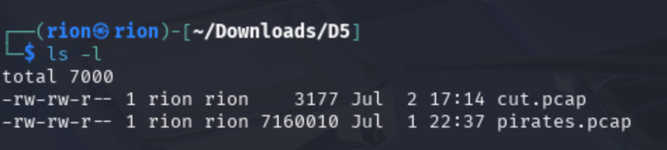
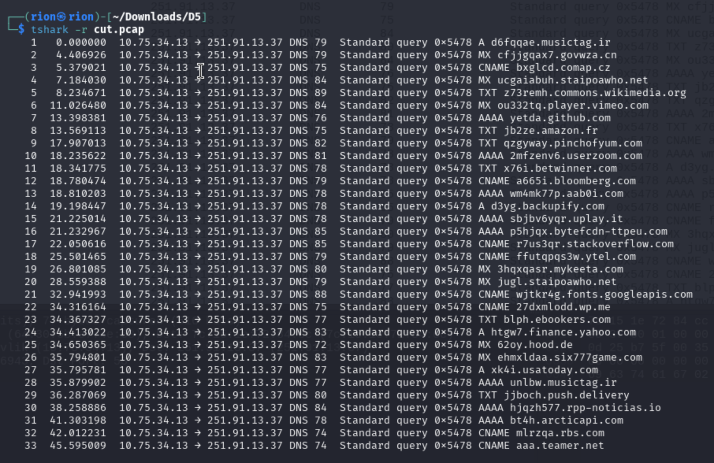
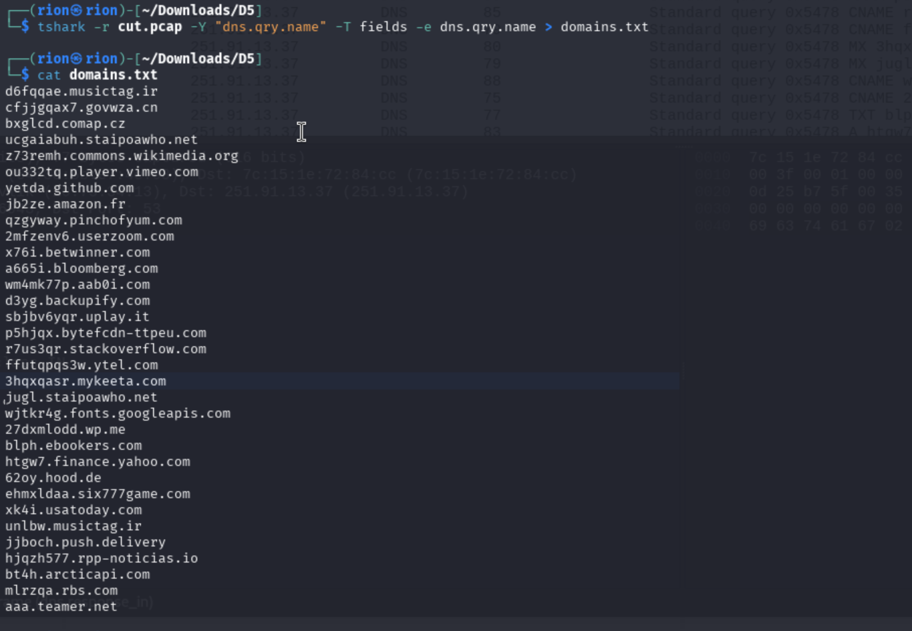
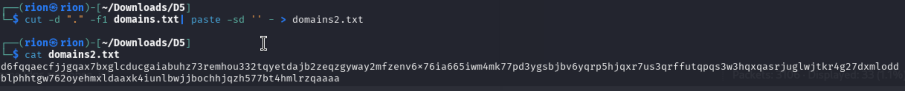
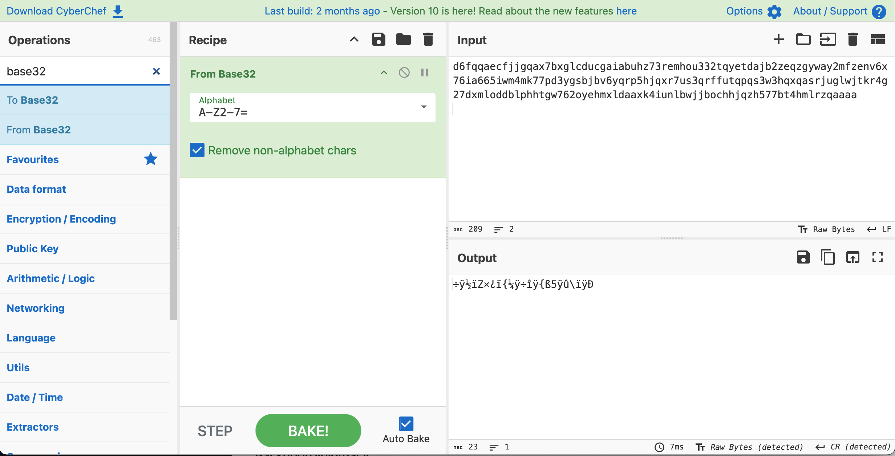
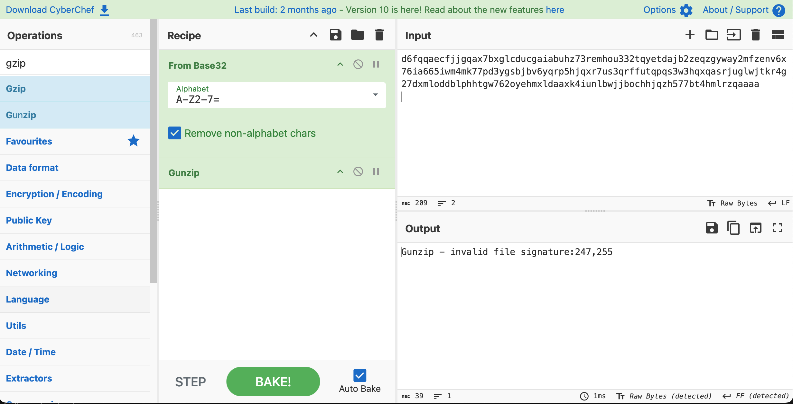
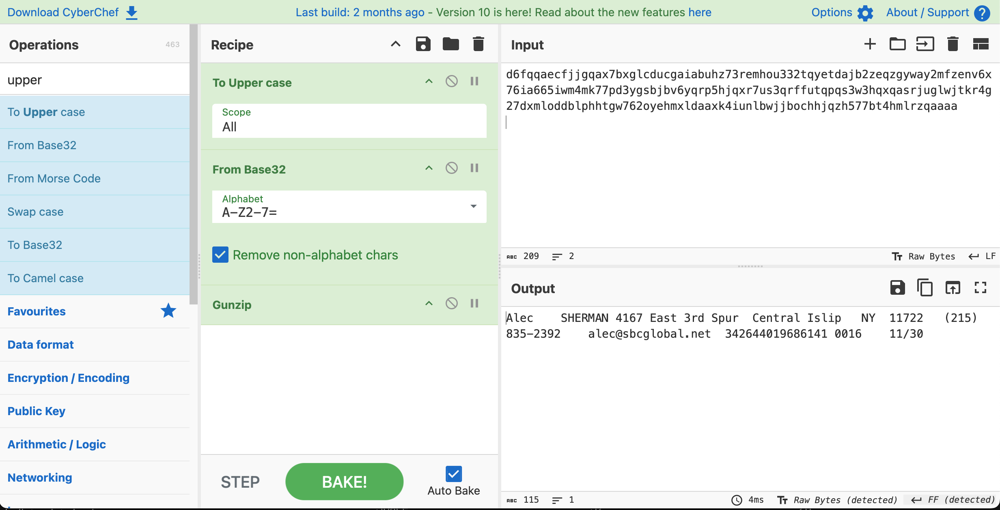

>_ Discover what the adversary exfiltrated in a packet capture.
Aye, ye be a smart one! Looks like we found where the stolen data is being smuggled out from... Since it looks like the pirates have already stolen some of our data, can we at least find out what they stole? If it's customer data, we may have an obligation to notify the affected parties...
Use your best skills to discover what they took.
Now that you can see where things are being exfiltrated, can you provide:
...of the poor soul (aka "gullible client") who we saw in the PCAP?
The flag is in the format:
For example, if the CreditCardExpiration is 01/23, CVVofCreditCard is 0987, and email is Alice34@bob.com, the flag would be:
In this challenge, we will continue to use the pirates.pcap file from D5 and build off of what we know:
Let's first filter the traffic to focus only on traffic from the compromised machine to the external IP. Type and apply the following into the display filter:

Wireshark — traffic filtered to destination 251.91.13.37 | Click to enlarge
Observing the Info column of the 33 filtered packets, we can see queries going outbound using different DNS record types to a variety of websites. However, it is odd that all domain names are prefixed with random characters!
Per the MITRE ATT&CK Framework, this is an Application Layer Protocol technique used to exfiltrate data via C2. Looking at the adversary group APT32: Ocean Lotus, one known procedure is: APT32's backdoor can exfiltrate data by encoding it in the subdomain field of DNS packets.
This is a huge clue. Let's isolate the prefixes of the domain names.
In the top menu select File → Export Selected Packets. Name your new file and save it as a .pcap. Then open a terminal and change to the folder where you saved the packets:
Confirm the file is present (my file was labeled cut.pcap):

Terminal — confirming cut.pcap is present in the directory
Confirm the exported traffic using tshark:

tshark — reading the exported packet capture
Use tshark to pull only the DNS query names and save to a file:
| Argument | Description |
| tshark | Command-line packet analyzer / Wireshark CLI |
| -r cut.pcap | Read the pcap file |
| -Y "dns.qry.name" | Apply the filter to display DNS query names |
| -T fields | Output values of the fields |
| -e dns.qry.name | Extract and print the DNS query name field from each matching packet |
| > domains.txt | Redirect / save to output file domains.txt |

domains.txt — DNS query names extracted from the capture
Now extract only the prefixes using cut and paste:
| Argument | Description |
| cut | Command to extract fields from each line of text |
| -d "." | Specify the delimiter as a period |
| -f1 domains.txt | Extract the first field (before the first delimiter) from domains.txt |
| | | Pipe the output of the first command to the next |
| paste | Command to join lines of text |
| -sd '' | Combine all lines into one line and remove whitespace |
| - | Read from standard input |
| > domains2.txt | Redirect / save to domains2.txt |

domains2.txt — all DNS prefixes concatenated on one line | Click to enlarge
Now pivot to CyberChef. Open the file or paste the prefix string into the input pane. From the Operations list, drag and drop From Base32 into the recipe.
Why Base32? Base32 is URL-safe and uses only letters and digits when encoding.

CyberChef — From Base32 added to recipe | Click to enlarge
The output shows compressed text. Adding Gunzip to decompress reveals an error — the compression type is wrong. The critical missing step is that all the prefix characters are in lowercase. Since ASCII maps lowercase and uppercase characters to different decimal values, we need to convert to uppercase before the Base32 decode. Add To Upper Case to the top of the recipe:

CyberChef — Gunzip error: lowercase input requires uppercasing first

CyberChef — To Upper Case → From Base32 → Gunzip reveals the exfiltrated PII | Click to enlarge
The plaintext exfiltrated data is now visible — use the credit card expiration, CVV, and email address to build the flag.
In this challenge, we inspected the compromised DNS traffic between Personalyz.io and Shadow Gopher and discovered data was exfiltrated using prefixed domain requests.
This tactic falls under TA0010 — Exfiltration as data is being egressed from the Personalyz.io organization to Shadow Gopher using prefixed DNS queries containing the data.
This technique falls under T1048 — Exfiltration Over Alternative Protocol as the protocol used for exfiltration is DNS port 53.
The compromised machine on the Personalyz network sends company PII using prefixed DNS requests on port 53 to an external endpoint owned by Shadow Gopher via Command and Control (C2).
The following mitigation measures can be applied to this TTP. Click a link to view full details in the MITRE ATT&CK Framework.
| Mitigation | Description |
| M1057 — Data Loss Prevention | Implementing strategies and technologies to identify, categorize, monitor and control the movement of sensitive data within an organization including: categorization, exfiltration restrictions, data-in-transit monitoring and endpoint data protection. |
| M1037 — Filter Network Traffic | Employ network appliances and endpoint software to filter ingress, egress and lateral network traffic, including protocol-based filtering, network segmentation, and application layer filtering. |
| M1031 — Network Intrusion Prevention | Use Intrusion Detection System (IDS) signatures to block traffic at network boundaries. |
| M1030 — Network Segmentation | Divide a network into smaller, isolated segments to control and limit the flow of traffic between devices, systems and applications, including implementing a DMZ on public-facing services, restricting traffic with ACLs and firewalls, and monitoring and auditing segmented networks. |
| M1022 — Restrict File and Directory Permissions | Least Privilege Access control on file or directory permissions, file integrity monitoring, and auditing file system access. |
| M1018 — User Account Management | Implement and enforce policies for the lifecycle of user accounts including enforcing the Principle of Least-Privilege, implementing MFA, strong password policies and account lockout policies, and properly deactivating dormant accounts when not in use. |
The following detection data sources are applicable to this TTP. Click a link to view full details in the MITRE ATT&CK Framework.
| Data Source | Description |
| DS0015 — Application Logs | Email Application Logs contain metadata about emails sent, received, or blocked. These logs can be evaluated using a SIEM tool. |
| DS0010 — Cloud Storage Access | Monitor for unusual queries to the cloud provider's storage service to detect suspicious cloud storage exfiltration. |
| DS0017 — Command Execution | Monitor executed commands and arguments that may steal data by exfiltrating it over a different protocol. |
| DS0022 — File Access | Monitor for suspicious files accessed in isolation that may indicate data being staged for exfiltration. |
| DS0029 — Network Connection Creation | Monitor for outbound connections using non-standard ports for FTP, DNS, SMTP or SMB. |
| DS0029 — Network Traffic Content | Network Packet Captures (Wireshark, Zeek, Suricata/Snort with PCAP logging), Host-Based logging and Cloud/SaaS traffic collection to inspect C2 traffic, exfiltration and suspicious activity within network communications. |
| DS0029 — Network Traffic Flow | Network Flow Logs (NetFlow, sFlow, Zeek/Bro flow logs), Host-Based logging and Cloud/SaaS flow monitoring for capturing session-level details including source/destination IPs, ports, protocols, timestamps and data volume. |
{kind=link}
{kind=link}
{kind=link}
{kind=link}
{kind=link}